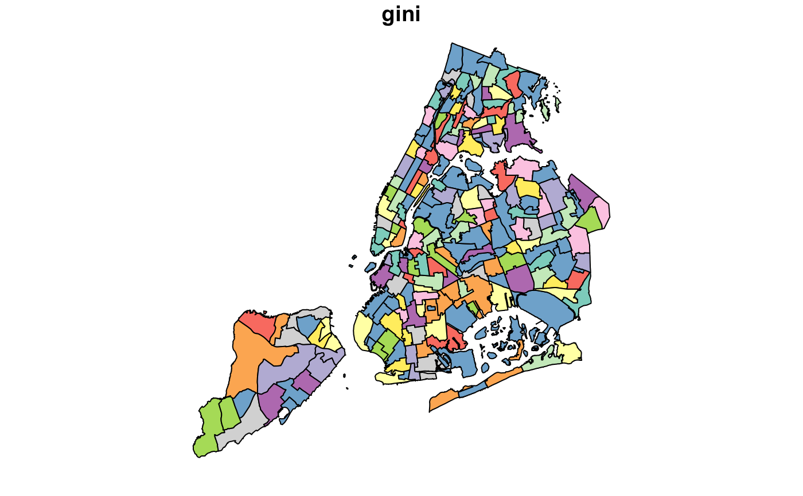

Demographic information for New York City aggregated to neighborhood tabulation area (NTA).
nycneighborhood
An sf data frame with 195 rows, 97 variables, and a geometry column:
Carto unique ID
Number for each of the five New York City boroughs
Households With Supplemental Security Income
Households With Social Security Income
Households With Public Assistance Income
Struggling as regards Ratio Of Income In 2012 To Poverty Level (1.00 to 1.99)
Population 25 Years and over with educational attainment of a professional degree level and below
Unemployed total population
Total Population
Total Population Over 18 years
Total population in labour force
Poor or struggling as regards Ratio Of Income In 2012 To Poverty Level (Under 2.00)
Doing poorly as regard Ratio Of Income In 2012 To Poverty Level (Under 1.00)
Hawaiian & Pacific Islander unemployed population
Hawaiian & Pacific Islanders in labour population
Total Population Pacific Islander
Other ethnic unemployed population
Other ethnic in labour force
Total Population Other Race
Population 25 Years and over with educational attainment of a professional degree level and below
Population 25 Years and over with educational attainment of a masters level degree and below
Population 25 Years and over with educational attainment of only less than high school
Population 25 Years and over with educational attainment of only high school level
Population 25 Years and over with educational attainment of doctorate level degree and below
Population 25 Years and over with educational attainment of college level and below
Population 25 Years and over with educational attainment of a bachelors level degree and below
Doing okay as regards Ratio Of Income In 2012 To Poverty Level (2.00 and over)
Mixed ethnic unemployed population
Mixed ethnic people in labour force
Total Population Mixed race
Population 25 Years and over with educational attainment of at least a masters degree
Unemployed male population
Total Population Male Over 18 years
Male Population 25 Years and over with educational attainment of a professional degree level and below
Male Population 25 Years and over with educational attainment of a masters level degree and below
Male Population 25 Years and over with educational attainment of only less than high school
Male Population 25 Years and over with educational attainment of only high school level
Male Population 25 Years and over with educational attainment of doctorate level degree and below
Male Population 25 Years and over with educational attainment of college level and below
Male Population 25 Years and over with educational attainment of a bachelors level degree and below
Male population in labour force
Male Not high school graduate, not enrolled (dropped out) - 16-19 age band
Male Civilian Population 16 To 19 Years
Total Population Male
Household Income less than 10000
Population 25 Years and over with educational attainment of at least less than high school
Total Households
Hispanic unemployed population
Hispanics in Labour force
Total Population Hispanic
Population 25 Years and over with educational attainment of at least high school level
Unemployed female population
Total Population Female Over 18 years
Female Population 25 Years and over with educational attainment of a professional degree level and below
Female Population 25 Years and over with educational attainment of a masters level degree and below
Female Population 25 Years and over with educational attainment of only less than high school
Female Population 25 Years and over with educational attainment of only high school level
Female Population 25 Years and over with educational attainment of doctorate level degree and below
Female Population 25 Years and over with educational attainment of college level and below
Female Population 25 Years and over with educational attainment of a bachelors level degree and below
Female population in labour force
Female Not high school graduate, not enrolled (dropped out) - 16-19 age band
Female Civilian Population 16 To 19 Years
Total Population Female
European American unemployed population
European Americans in labour force
Total Population White
Population 25 Years and over with educational attainment of at least doctorate level
More than 90 min commute to work for Workers 16 Years And Over Who Did Not Work At Home
Less than 5 min commute to work for Workers 16 Years And Over Who Did Not Work At Home
60 to 89 min commute to work for Workers 16 Years And Over Who Did Not Work At Home
5 to 14 min commute to work for Workers 16 Years And Over Who Did Not Work At Home
45 to 59 min commute to work for Workers 16 Years And Over Who Did Not Work At Home
30 to 44 min commute to work for Workers 16 Years And Over Who Did Not Work At Home
15 to 29 min commute to work for Workers 16 Years And Over Who Did Not Work At Home
Population 25 Years and over with educational attainment of at least college level
Population 25 Years and over with educational attainment of at least a bachelors degree
Asian American unemployed population
Asian Americans in labour force
Total Population Asian American
American Indian unemployed population
American Indians in labour force
Total Population American Indian
African American unemployed population
African Americans in labour force
Total Population African American
New York City Neighborhood Tabulation Area (NTA) name
name of the NYC borough
Population Density (per sq. mile)
code associatd with the Neighborhood Tabulation Area (NTA)
Median household income (In 2012 Inflation Adjusted Dollars)
Total Population Male Median Age
Total Population Female Median Age
Total Population Median Age
Average Household Size
Gini Index Of Income Inequality
Unemployment rate
American Community Survey 2008-2012, US Census Bureau.
Sf object, unprojected. EPSG 4326: WGS84.
if (requireNamespace("sf", quietly = TRUE)) { library(sf) data(nycneighborhood) plot(nycneighborhood["gini"]) }